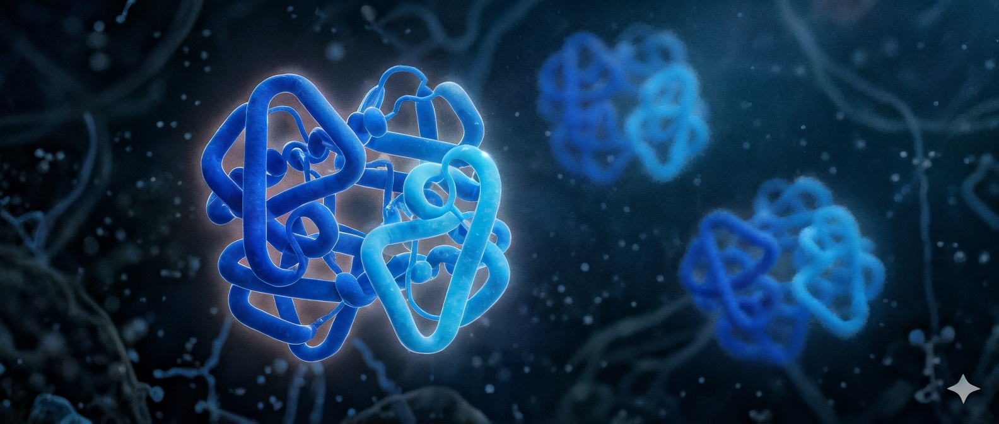

Simulaciones físicas
Dinámica Molecular
Ofrecen rigor físico, pero su aplicación a sistemas completos puede requerir alto costo computacional y tiempos prolongados de ejecución.


ATOM-B analiza regiones funcionales de proteínas mediante mapas físicos discretos, permitiendo identificar cavidades, sitios activos y regiones terapéuticas con velocidad, precisión y trazabilidad.
Las plataformas actuales suelen elegir entre simulaciones físicas costosas o modelos estadísticos dependientes de datos históricos. ATOM-B propone una tercera vía: análisis físico discreto, rápido y auditable.
Ofrecen rigor físico, pero su aplicación a sistemas completos puede requerir alto costo computacional y tiempos prolongados de ejecución.
Acelera la exploración, pero puede depender de datos históricos y perder capacidad predictiva frente a blancos poco estudiados o sin precedentes.
En lugar de simular todo el sistema molecular, ATOM-B identifica únicamente las regiones que influyen en la interacción entre una proteína y un posible fármaco.
Procesamiento diseñado para ejecutarse en segundos o minutos según la complejidad estructural.
Basado en observables geométricos, electrostáticos y direccionales.
Cada predicción puede rastrearse hasta los valores físicos del vóxel que la originó.

ATOM-B transforma una estructura molecular en mapas físicos que permiten localizar, clasificar y comparar regiones funcionales.
Se parte de una estructura proteica experimental o modelada.
El espacio molecular se divide en pequeños volúmenes tridimensionales.
Se clasifican cavidades, canales, interfaces y regiones estructurales clave.
Cada predicción conserva su origen físico para revisión y auditoría.
ATOM-B evalúa tres propiedades fundamentales de cada región molecular.
Identifica qué tan accesible, profundo o protegido es cada espacio dentro de una proteína.
Evalúa las fuerzas químicas predominantes que podrían favorecer o impedir una interacción molecular.
Analiza la dirección e intensidad de las fuerzas que guiarían el acercamiento de una molécula terapéutica.
ATOM-B convierte estructuras proteicas en información accionable para equipos de investigación, biotech y farmacéuticas.
Mapa de cavidades, sitios de unión, canales e interfaces relevantes.
Clasificación de regiones rígidas, flexibles, expuestas o sobreempaquetadas.
Identificación de puntos funcionales donde puede existir interacción terapéutica.
Explicación trazable de cada predicción basada en propiedades físicas discretas.
Resultados exportables para docking, análisis estructural o diseño racional.
ATOM-B está diseñado para apoyar las etapas tempranas del descubrimiento racional de fármacos.
Localiza bolsillos y espacios funcionales dentro de proteínas.
Prioriza regiones con potencial terapéutico.
Identifica regiones que podrían regular múltiples funciones proteicas.
Reconoce la influencia estructural y catalítica de Zn, Fe, Mg, Cu y Mn.
Evalúa cómo mutaciones pueden alterar función, estabilidad o resistencia.
Convierte estructuras proteicas en mapas consultables, comparables y escalables.
ATOM-B opera sobre física discreta auditable, concentrándose en las regiones que realmente participan en la función molecular.
| Criterio | Dinámica Molecular | IA generativa | ATOM-B |
|---|---|---|---|
| Velocidad | Baja / media | Alta | Alta |
| Costo computacional | Alto | Medio | Bajo / medio |
| Trazabilidad | Alta | Variable | Alta |
| Dependencia de datos históricos | No | Sí | No |
| Blancos poco estudiados | Limitado por costo | Limitado por datos | Analizable por física |
ATOM-B está diseñado para que cada resultado pueda contrastarse contra información estructural, como coordenadas cristalográficas, cofactores reportados, moléculas de agua estructural y residuos funcionales.
Comparación entre centros farmacofóricos predichos y metales o cofactores observados experimentalmente.
Identificación de regiones compatibles con moléculas de agua ordenada dentro de cavidades.
Cada predicción puede rastrearse hasta confinamiento, electrostática y dirección de fuerza.


Mientras la Dinámica Molecular calcula el comportamiento de toda la proteína y su entorno, ATOM-B se concentra únicamente en las regiones relevantes, reduciendo drásticamente el tiempo y los recursos necesarios para el análisis.
Puede transformar estructuras proteicas en mapas funcionales indexables, permitiendo búsquedas, comparaciones y priorización de regiones terapéuticas a escala.
ATOM-B está orientado a organizaciones que necesitan velocidad, rigor físico y trazabilidad en decisiones tempranas.
Priorización temprana de blancos, sitios activos y oportunidades terapéuticas.
Exploración de proteínas poco estudiadas y validación estructural inicial.
Análisis físico de cavidades, cofactores, interfaces y regiones funcionales.
Integración con pipelines de docking, visualización o descubrimiento computacional.
En ATOM-B eliminamos las cajas negras mediante una plataforma donde cada predicción es auditable hasta el nivel de un vóxel. Si buscas rigurosidad científica, velocidad y trazabilidad, solicita una demo.
Comparte la información básica del proyecto. El equipo revisará el caso y definirá la mejor ruta de evaluación para ATOM-B.